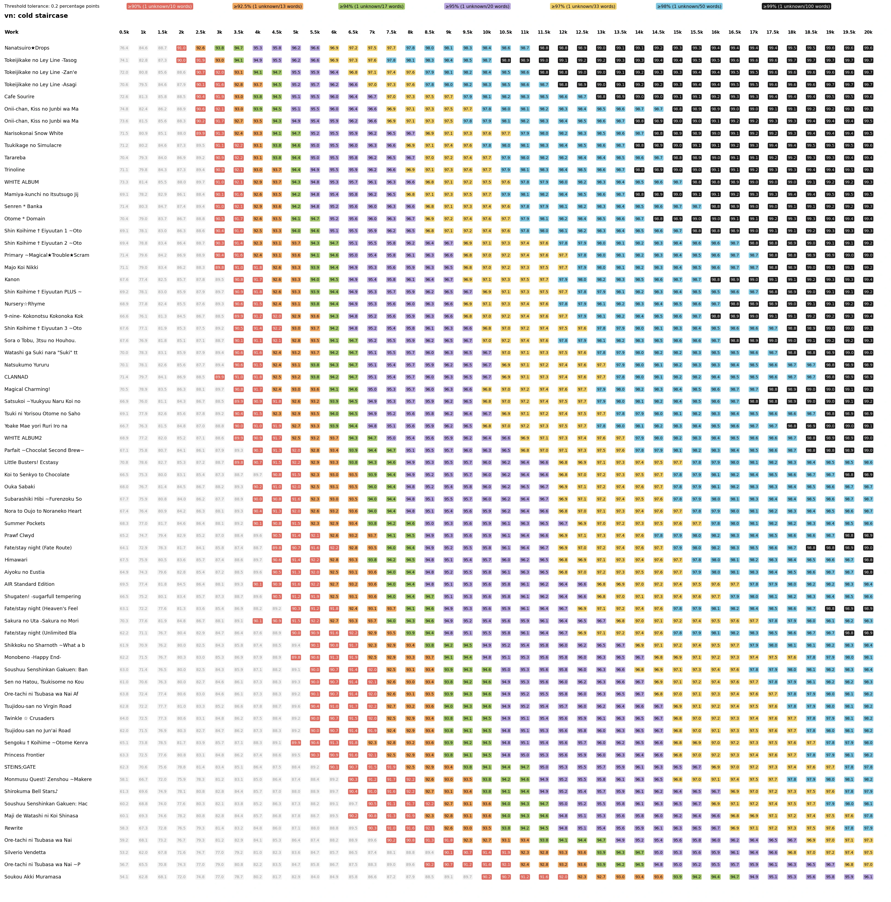
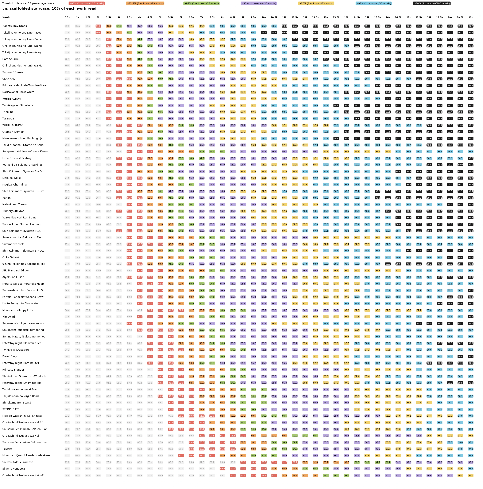
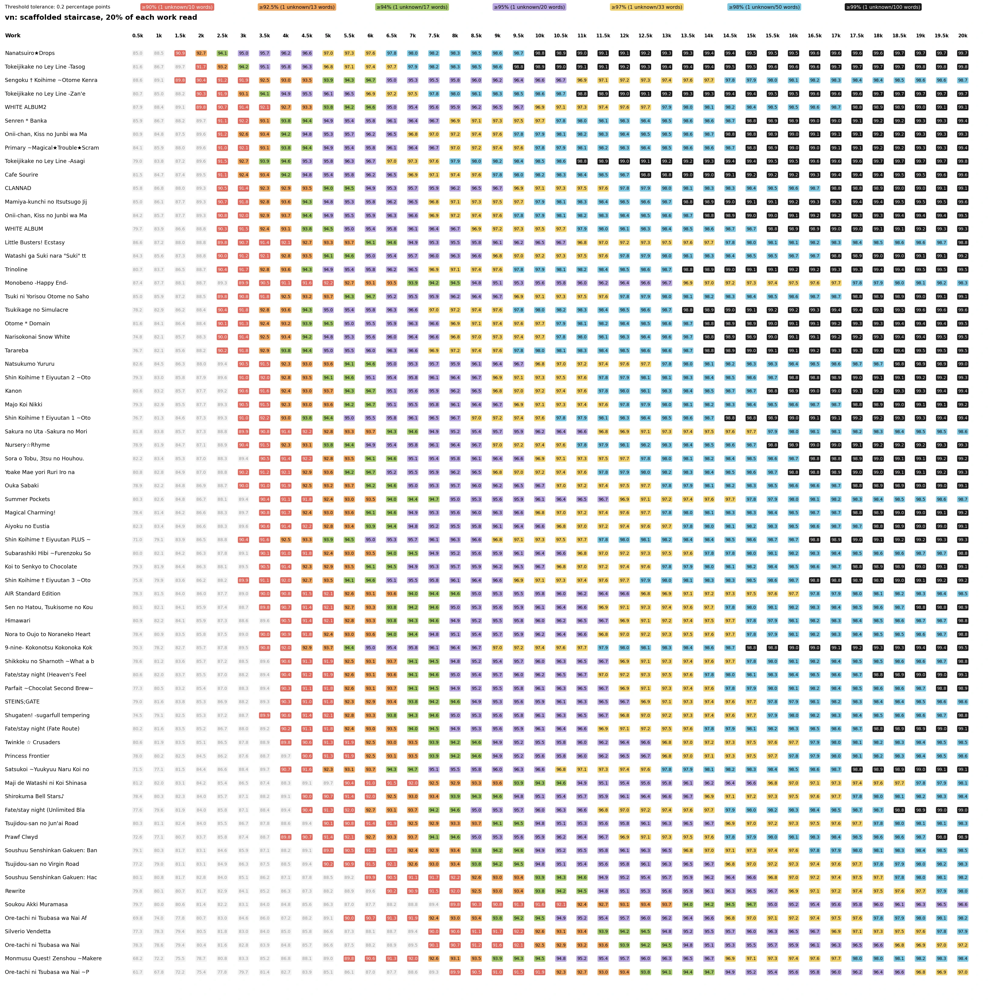
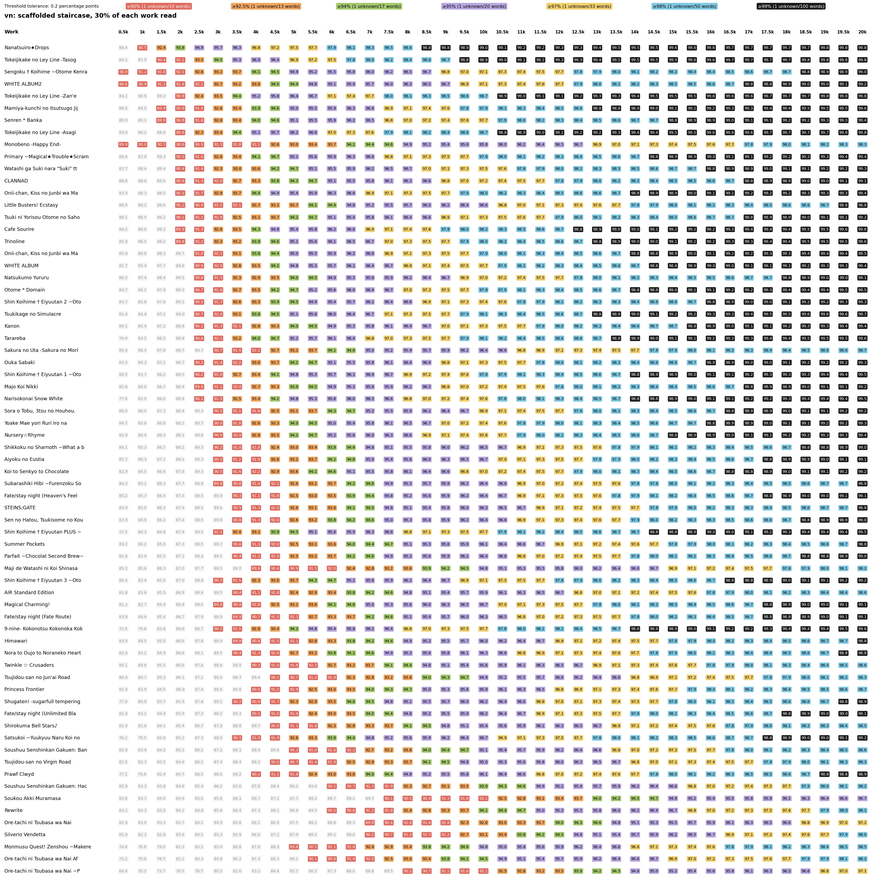
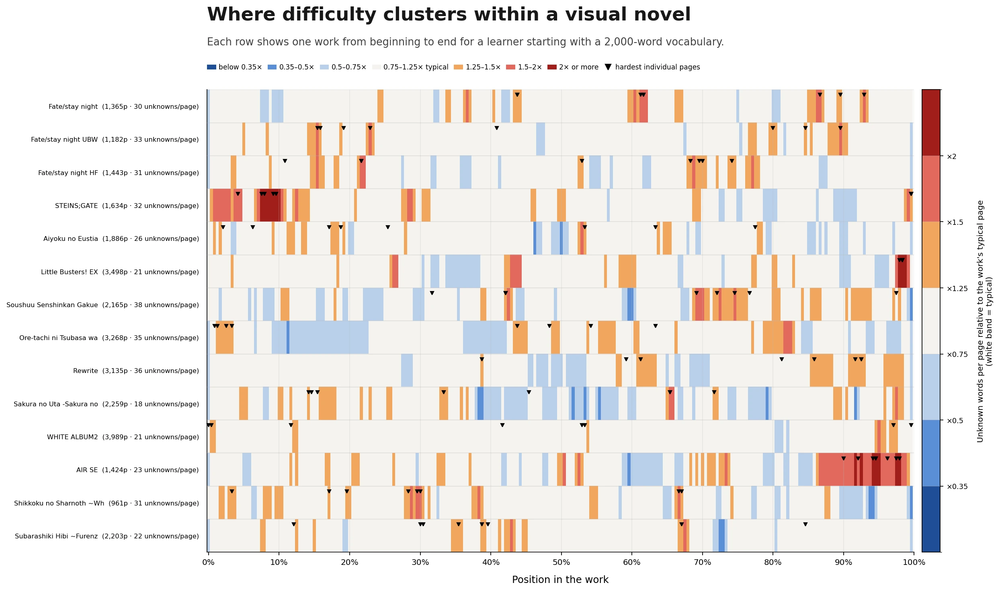

The result in four examples
Start with a synthetic learner who knows the 500 most frequent entries in the Default VN frequency list. The first number is coverage before starting. The second is coverage of the unread remainder after the first 30% has been treated as read.
| Visual novel | Before starting | Remaining 70% | Change |
|---|---|---|---|
| Nanatsuiro Drops | 76.4% | 88.4% | +12.0 points |
| CLANNAD | 71.4% | 88.6% | +17.2 points |
| Majikoi | 60.1% | 85.2% | +25.1 points |
| Full Metal Daemon Muramasa | 54.1% | 83.6% | +29.5 points |
The harder openings can produce the largest changes because they contain more recurring local vocabulary that was absent from the learner's starting list. This does not make the opening painless. It means page one is often a poor guide to how page 300 or page 1,000 will feel.
The cold staircase
Every row is a visual novel. Every column is a learner who knows the first 500, 1,000, 1,500, 2,000, and so on entries of the Default VN frequency list. The cell is the percentage of eligible vocabulary tokens recognized across the entire work.

Then let the work teach its own recurring vocabulary
The next figures keep the learner and work fixed. The only change is that the first 10%, 20%, or 30% is treated as read before measuring the unread remainder.



What the “30% rule” means
When deciding whether a long visual novel is too difficult, ask two questions:
- How much will I recognize when I begin?
- What will the remaining 70% look like if I can get through the first 30%?
Thirty percent is not a universal law. Shorter works have less time to repeat their vocabulary, and individual works move at different rates. The useful idea is that a work's entry cost and its later steady state should not be collapsed into one number. DokiDokiDict exposes the full 0% to 90% progression in detailed analysis for exactly that reason.
Method used for these figures
- The vocabulary axis is the app's Default VN list, using the UniDic lemma identities in Wareya's classic frequency list.
- Punctuation, symbols, spaces, grammar words, and proper names are removed. Pronouns, prefixes, suffixes, determiners, numerals, counters, and 形状詞 remain.
- At every frequency level, the twenty most frequent still-uncovered words in that work are treated as manageable local vocabulary because they are likely to be names, setting-specific jargon, or parsing errors rather than reliable measures of general lexical difficulty.
- A new word becomes familiar after four counted sightings, with at least five pages between sightings.
- After reading a prefix, coverage is measured only on the unread remainder.
This is a reproducible exposure and recognition model. It does not claim that every learner permanently acquires every word on the fourth encounter.
An average can hide the texture
An overall coverage number cannot show whether difficult pages are spread evenly or cluster into walls. Each row runs from beginning to end for a learner starting with a 2,000-word vocabulary. Colors compare each section with that work's typical page, and the black markers identify its eight hardest individual pages.

What should come before the wall?
The next analysis compares three complete routes through the VN staircase from the same 500-word starting point.